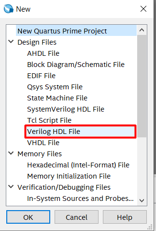
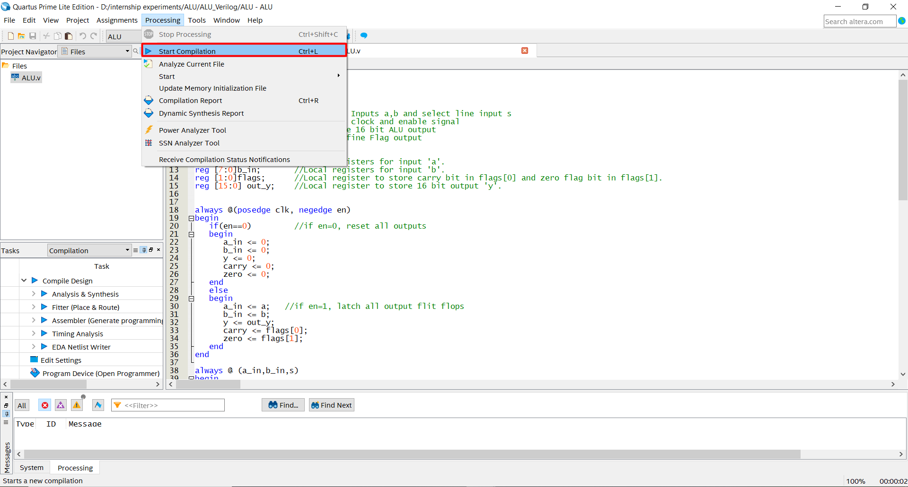
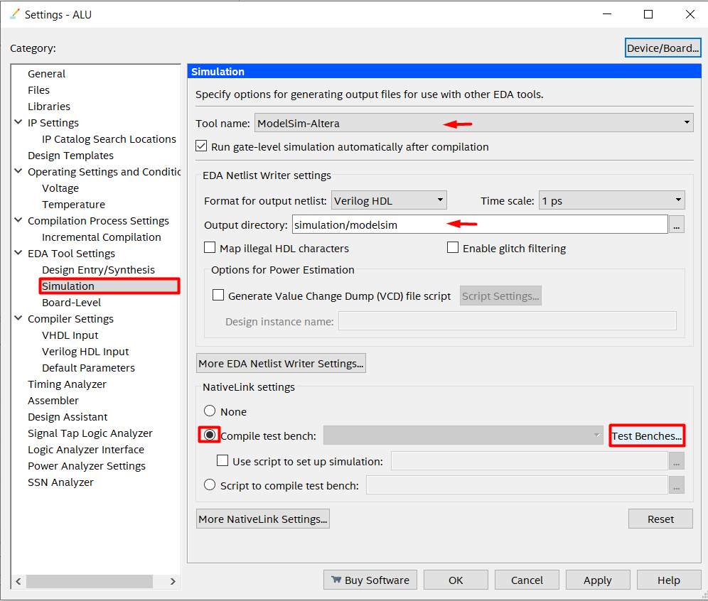
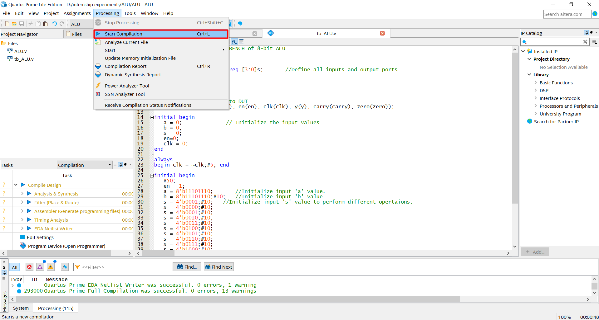

1. Introduction
An arithmetic logic unit (ALU) is a digital circuit used to perform arithmetic and logic operations. It represents the fundamental building block of the central processing unit (CPU) of a computer. Modern CPUs contain very powerful and complex ALUs. In addition to ALUs, modern CPUs contain a control unit (CU).
Most of the operations of a CPU are performed by one or more ALUs, which load data from input registers. A register is a small amount of storage available as part of a CPU. The control unit tells the ALU what operation to perform on that data, and the ALU stores the result in an output register. The control unit moves the data between these registers, the ALU, and memory.
1.1 Problem Statement.
To Design an 8-bit ALU which performs different set of Arithmetic and logical operations based on the select input ’s’.It includes writing, compiling and simulating Verilog code in Quartus II and ModelSim respectively.
1.2 Block Diagram 8-bit ALU.
1.3 Implementation Table of 8-bit ALU.
The below table indicates the Arithmetic and Logical operations performed based on the select input ’s’ and also the output ’y’ obtained for for the given set of input ’a’ and ’b’. The Arithmetic opertaions that are performed here are:
- Addition
- Subtraction
- Multiplication
- Division
- Increment
- Decrement
- Bitwise AND & NAND
- Bitwise OR & NOR
- Bitwise NOR & XNOR
- Shift Right & Shift Left
- Rotate Right & Rotate Left
| s | operation | a | b | y | carry | zero |
|---|---|---|---|---|---|---|
| 0000 | Addition | 11101110 | 11101110 | 00000000 11011100 | 1 | 0 |
| 0001 | Subtraction | 11101110 | 11101110 | 00000000 00000000 | 0 | 1 |
| 0010 | Increment | 11101110 | 11101110 | 00000000 11101111 | 0 | 0 |
| 0011 | Decrement | 11101110 | 11101110 | 00000000 11101101 | 0 | 0 |
| 0100 | Multiplication | 11101110 | 11101110 | 11011101 01000100 | 0 | 0 |
| 0101 | Division | 11101110 | 11101110 | 00000000 00000001 | 0 | 0 |
| 0110 | Bitwise AND | 11101110 | 11101110 | 00000000 11101110 | 0 | 0 |
| 0111 | Bitwise OR | 11101110 | 11101110 | 00000000 11101110 | 0 | 0 |
| 1001 | Bitwise XOR | 11101110 | 11101110 | 00000000 00000000 | 0 | 1 |
| 1010 | Bitwise NOR | 11101110 | 11101110 | 00000000 00010001 | 0 | 0 |
| 1001 | Bitwise XNOR | 11101110 | 11101110 | 00000000 00010001 | 0 | 0 |
| 1011 | Shift Left | 11101110 | 11101110 | 00000000 11111111 | 0 | 0 |
| 1100 | Shift Right | 11101110 | 11101110 | 00000000 11011100 | 1 | 0 |
| 1101 | Rotate Right | 11101110 | 11101110 | 00000000 01110111 | 0 | 0 |
| 1110 | Rotate Right | 11101110 | 11101110 | 00000000 01110111 | 0 | 0 |
| 1111 | Rotate Left | 11101110 | 11101110 | 00000000 11011101 | 0 | 0 |
2. Verilog HDL Codes for 8-bit ALU
2.1 RTL Description
// Verilog Design for a 8 -bit ALU .
/* This design will Perform Arithmetic and Logical operations
based on the select input */
// Define module .
module ALU (
input [ 7 : 0 ]a,b,
input [ 3 : 0 ]s, // Define Inputs a,b and select line input s
input en ,clk , // Define clock and enable signal
output [ 15 : 0 ] y, // Define 16 bit ALU output
output carry , zero // Define Flag output
);
reg [ 7 : 0 ] a_in ; // Local registers for input 'a '.
reg [ 7 : 0 ] b_in ; // Local registers for input 'b '.
reg [ 1 : 0 ] flags ;
/* Local register to store carry bit in flags [0] &
zero flag bit in flags [1] */
reg [ 15 : 0 ] out_y ; // Local register to store 16 bit output 'y '.
always @( posedge clk , negedge en)
begin
if(en ==1) // if en =1 , reset all outputs
begin
a_in <= 0;
b_in <= 0;
y <= 0;
carry <= 0;
zero <= 0;
end
else
begin
a_in <= a; // if en =1 , latch all output flit flops
b_in <= b;
y <= out_y ;
carry <= flags [ 0 ] ;
zero <= flags [ 1 ] ;
end
end
always @ (a_in ,b_in ,s)
begin
flags = 2' b00; // set flags to zero
case (s)
4'd0:
begin
out_y ={8 'd0 ,( a_in + b_in )}; // addition
flags [ 0 ] = out_y [ 8 ] ; // carry is set if generated .
end
4'd1:
begin
out_y ={8 'd0 ,( a_in - b_in )}; // Subtraction
flags [ 0 ] = out_y [ 8 ] ; // carry is set if Borrow is taken .
end
4'd2:
begin
out_y ={8 'd0 ,( a_in + 1'b1 )}; // Increment
flags [ 0 ] = out_y [ 8 ] ; // carry is set if generated .
end
4'd3: begin
out_y ={8 'd0 ,( a_in - 1'b1 )}; // Decrement
flags [ 0 ] = out_y [ 8 ] ; // carry is set if Borrow is taken .
end
4'd4: out_y =( a_in * b_in ); // Multiplication .
4'd5: out_y =( a_in / b_in ); // Division
4'd6: out_y ={8 'd0 ,( a_in & b_in )}; // Bitwise AND
4'd7: out_y ={8 'd0 ,( a_in | b_in )}; // Bitwise OR
4'd8: out_y ={8 'd0 ,( a_in ^ b_in )}; // Bitwise XOR
4'd9: out_y ={8 'd0 ,~( a_in & b_in )}; // Bitwise NAND
4' d10: out_y ={8 'd0 ,~( a_in | b_in )}; // Bitwise NOR
4' d11: out_y ={8 'd0 ,~( a_in ^ b_in )}; // Bitwise XNOR
4' d12:
begin
flags [ 0 ] = a_in [ 7 ] ; // Update carry flag
out_y ={8 'd0 ,( a_in < <1)}; // Shift Left
end
4' d13: begin
flags [ 0 ] = a_in [ 0 ] ; // Update carry flag
out_y ={8 'd0 ,( a_in > >1)}; // Shift Right
end
4' d14: out_y ={8 'd0 , a_in [ 0 ] ,a_in [ 7 : 1 ] }; // right rotate
4' d15: out_y ={8 'd0 , a_in [ 6 : 0 ] ,a_in [ 7 ] }; // left rotate
default : out_y =16 ' d0;
endcase
if( out_y == 0)
flags [ 1 ] = 1; // set zero flag if output is zero
end // End of case structure .
endmodule
2.2 Testbench for 8-bit ALU.
// Verilog code for TestBench of 8 -bit ALU
// Define module
module tb_ALU ;
reg [ 7 : 0 ]a; reg [ 7 : 0 ]b; reg [ 3 : 0 ]s; // Define I/O ports
reg clk; reg en;
wire [ 15 : 0 ]y;
wire carry ;
wire zero ;
// Map all the I/O ports with DUT .
ALU uut (.a(a) ,.b(b) ,.s(s) ,. en(en ) ,. clk(clk ) ,.y(y) ,. carry ( carry ) ,. zero ( zero ));
// Initialise Input pins with 0
initial begin
a = 0;
b = 0;
s = 0;
en =1;
clk = 0;
end
always
begin clk = ~clk ;#5; end // Generate a clock of period 10 units
initial begin
#50;
a = 8' b11101110 ; // Initialise 8bit input value for a & b.
b = 8' b11101110 ;#29;
// Initialise 's' value to perform different operations .
s = 4' b0001 ;#30;
s = 4' b0010 ;#30;
en =0
s = 4' b0001 ;#30;
s = 4' b0010 ;#30;
s = 4' b0011 ;#30;
s = 4' b0100 ;#30;
s = 4' b0101 ;#30;
s = 4' b0110 ;#30;
s = 4' b0111 ;#30;
s = 4' b1000 ;#30;
s = 4' b1001 ;#30;
s = 4' b1010 ;#30;
s = 4' b1011 ;#30;
s = 4' b1100 ;#30;
s = 4' b1101 ;#30;
s = 4' b1110 ;#30;
s = 4' b1111 ;#30;
end // End of initial block
endmodule // End of module .
3. Implementing on quartus II
Follow the below steps :
Start a New Project in Quartus Lite software
You will see this screen after completing all the steps. For detailed steps refer the Getting Started with Quartus section from Task 0.
We will be using Verilog throughout this project. Create a New Verilog HDL file.
- Type the code for 8-bit ALU in this file.
- Go to File→Save as and save the file.
Go to Project→Set as Top-Level Entity. The ALU file is our main file and make sure you have selected this file while setting the top level entity.
- Goto Processing→Start Compilation.
You can verify whether all the files are compiled successfully by checking the highlighted tabs i.e. Messages and Tasks tab.



Note: File name should be same as module name.


4. RTL Circuit of the implemented design
Steps to get RTL circuit.
- Goto Tools→Netlist Viewers→RTL Viewer.
- The below figure shows the equivalent RTL circuit of 8-bit ALU.

5. Implementing on Modelsim
For more detailed procedure on using ModelSim, refer Getting Started with Quartus section from Task 0. You can find Verilog HDL TestBench code below.
- Create a New Verilog file in Quartus Prime.Type in the TestBench code provided in this document and save the file with the same name as the module name
- Go to Assignments→Settings.
Navigate to Simulation under EDA Tool Settings. Set the language as Verilog HDL. Select Compile TestBench and then click on Test Benches.
- Click on New, this opens another dialogue box.
Now type in the TestBench name(In this design , its tb_ripple_carry_adder). Now click on the highlighted Browse button.Find the TestBench file(it can be found in the project directory) and click on Open. Now click on Add,then OK.


Functional Simulation using NativeLink Feature
- Go to Processing→Start Compilation
Go to Tools→Run Simulation Tool→RTL Simulation to automatically run the EDA simulator (ModelSim-Altera) and to compile all necessary design files.
Finally ModelSim-Altera tool opens up with simulated waveform. Click on Run all icon on the tool box to display the waveform.

Note: If you cannot see the graph, Click on the waveform window and select the Zoom all option.
6. Simulation Results
Simulation waveform of the Verilog Design
The Result shown below can be verified by comparing it with the Truth Table provided in section 1.4 above. You can observe individual bits of a particular signal by clicking on the ’+’ icon.
Observation: Based on the select input ’s’ the opertion is performed on input ’a’ and ’b’ and the 16 bit result is generated on output line ’y’.The carry flag is raised when carry is generated and Zero flag is raised if the result is zero during the operation.